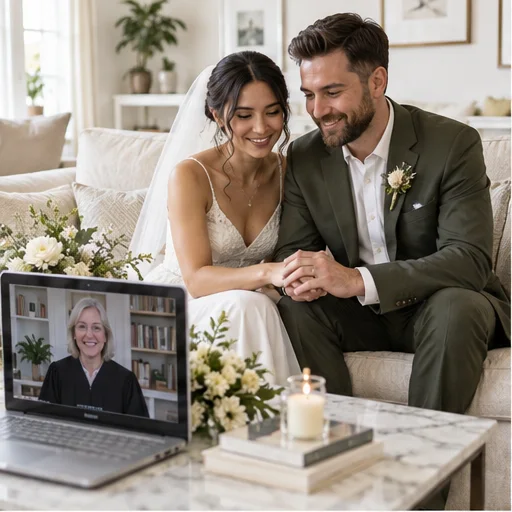

מסמכים אחרי הטקס
תעודת נישואין מיוטה: אפוסטיל ורישום בישראל
מה ההבדל בין רישיון לתעודה, מי מנפיק אפוסטיל ואילו מסמכים נדרשים לעדכון המצב האישי בישראל.
לקריאת המאמרמדריכים להכנה עצמאית: רישיון נישואים ביוטה, הטקס והמסמכים לאחריו.
מסמכים אחרי הטקס
מה ההבדל בין רישיון לתעודה, מי מנפיק אפוסטיל ואילו מסמכים נדרשים לעדכון המצב האישי בישראל.
לקריאת המאמר
מדריכים מעשיים
מהטיוטה הדיגיטלית לבקשת הרישיון באתר המחוז, ואז בחירת טקס מרחוק. כל שלב בסדר ברור.
לקריאת המאמר
זוגיות וטקס
מה בודקים זוגות מאותו מין לפני בקשת הרישיון, ואיך מתכננים טקס אישי מרחוק.
לקריאת המאמר
מסמכים ובירוקרטיה
רשימת הכנה למסמכים ולפרטים הדרושים לפני מילוי הבקשה הרשמית ב-Utah County.
לקריאת המאמר
מסמכים ובירוקרטיה
איך בודקים תעודה, אפוסטיל ותרגום לפני שמגישים בקשה לעדכון המצב האישי בישראל.
לקריאת המאמר
תכנון הטקס
רעיונות לטקס קטן בבית: עדים, תאורה, קישור לשיחת הווידאו ומקום למשפחה.
לקריאת המאמר
תכנון הטקס
לוח זמנים מציאותי: הכנה, בקשת רישיון, זמינות הטקס והמסמכים שאחריו.
לקריאת המאמרתכנון הטקס
מי יכולים להיות שני העדים ומה כדאי לבדוק איתם לפני תחילת שיחת הווידאו.
לקריאת המאמר
בחירת מסלול
משווים בין טקס מרחוק ביוטה לנסיעה לקפריסין: נוכחות, מסמכים והשלבים בישראל.
לקריאת המאמר
זוגיות וטקס
רעיונות למילים אישיות בעברית למי שרוצה לשלב נדרים בטקס, בלי נוסחה או משימה שחייבים להשלים.
לקריאת המאמר
זוגיות וטקס
איך משתפים אורחים ממדינות שונות ומתאמים שעה וקישור שמתאימים לכולם.
לקריאת המאמרהשראה ותכנון
רעיונות לבחירתכם לסידור נוח של הבית, לצד תיאום אורחים וקישור לטקס קטן.
לקריאת המאמר
השראה ותכנון
השראה לבחירת לבוש אישי ונוח לטקס; אין קוד לבוש או בדיקת מצלמה ייעודית לבגד.
לקריאת המאמר